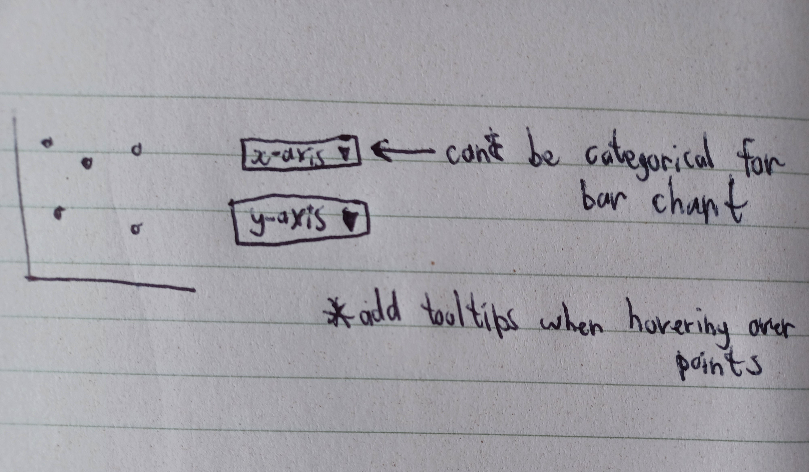
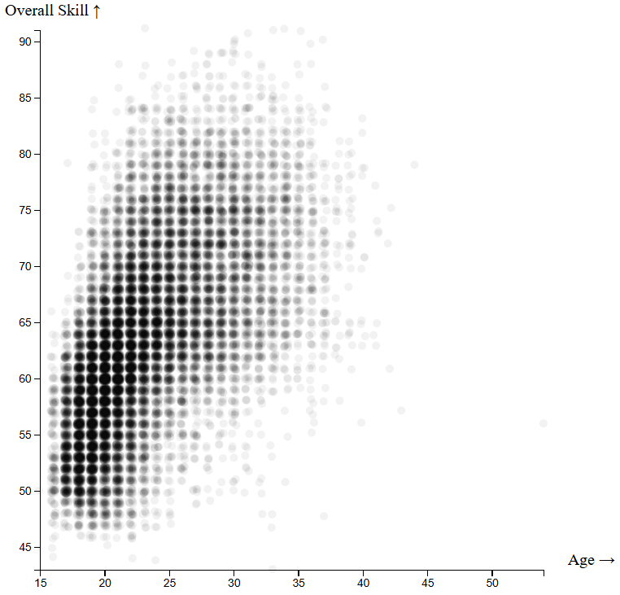
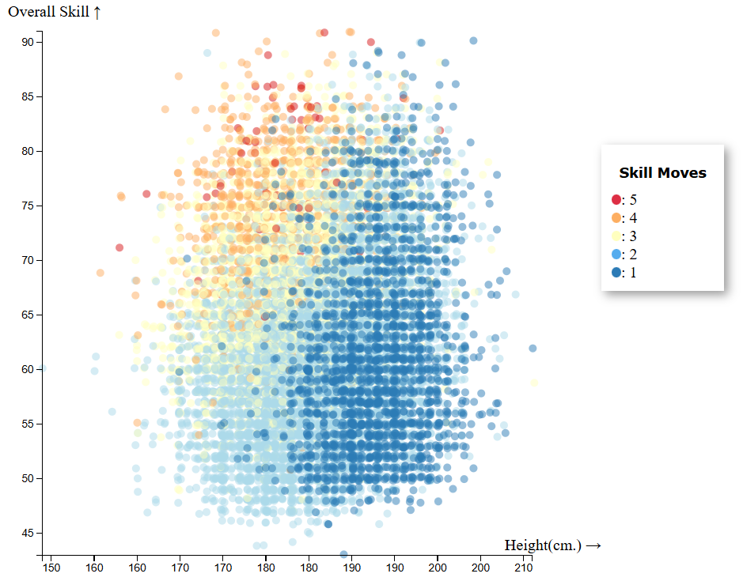
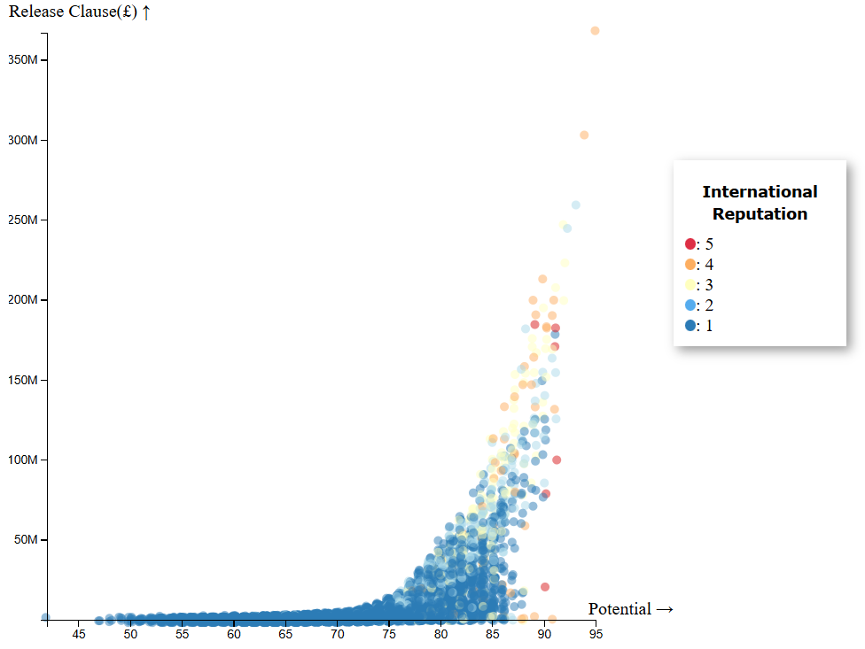

When I went about designing the visualization, I made plans (seen below) and worked on them until some shortcoming was detected. At that point, I refined or scrapped the design in question. Some of the original designs or ideas I had attempted in the beginning can be seen below in plans 1-3. I ultimately settled on a refined version of plan 1 in plan 4.
Plan 1:

Plan 2:
Plan 3:
Plan 4:
Since there were a significant number of quantitative attributes in my dataet, scatterplots were naturally looked to.
They provides the important quality of position on a common scale, thus maximizing the visualization's effectiveness.
Different options for the x and y axes were provided, which lets the user analyze various quantitative attributes in creative ways.
An opacity of 0.05 and some slight jitter was applied due to there being over 17000 points in the dataset.
These changes let the user see trends and prevented hundreds of points from being stacked on top of each other.
All points were still visible after these changes, and the jitter did not substantially change the position of any point.
By itself, this could already work as a good, standalone visualization.
However, the user should be able to peruse the dataset's categorical attributes as well.
These categorical attributes were then added to the x and y axes as options, but they can also be encoded with color hue.
When encoded, the opacity of all points increases to 0.5, and the reasoning behind this was twofold.
First, lighter colors were practically invisible against the already-white background.
And second, opaque points could be confused with lighter colors.
An exceptional categorical variable referred to as "Preferred Foot" was not provided as an option on the x and y axes.
This was due to the fact that the use of a magnitude channel for this variable would violate the expresiveness principle—specificially because it contains unordered observations.
It also retains an opacity of 0.05 as only two non-light colors were required for this encoding.
These features already covered everything a user may wish for when exploring the dataset.
However, there were some miscellaneous parts of the dataset that had no real value to the user looking for insights.
For this reason, tooltips were implemented as a nod to aesthetics that could pique the interest of both the casual and meticulous.
In order to find facts or answer questions, I often asked a question and answered it. I would add color if nothing immediately popped. Occasionally, there would be something to follow-up on. All of this usually happened within my mind, but the following are provided as an example.
Question: How does age correlate with overall skill?
Answer: Age positively correlates with overall skill up to a certain point (around the age of 32), after which there is a negative correlation. If one employs experience outside of this visualization while simultaneously observing that the density of points after the age of 32 greatly diminishes, then one can additionally see that as players age, they are more likely to retire.

Question: What relationship do height and overall skill have? And how does that factor in with the number of skill moves a player has?
Answer: Height and overall skill do not have any clear relationship. Skill moves increase with the overall skill of players, and they also have a noteworthy negative association with height. This suggests that shorter players find it easier to execute skill moves.

Question: How does a player's potential correlate with the size of their release clause? And how would international reputation tie into these two variables?
Answer: Potential appears to have a relatively mild relationship with release clause until potential reaches about 75. At this point, release clause exponentially grows whenever potential slightly increases. International reputation also goes beyond the invariable "1" after roughly 75 potential is reached. This would indicate that once a certain amount of potential is reached, one's soccer (or football) career will receive exponential success in varying areas.
